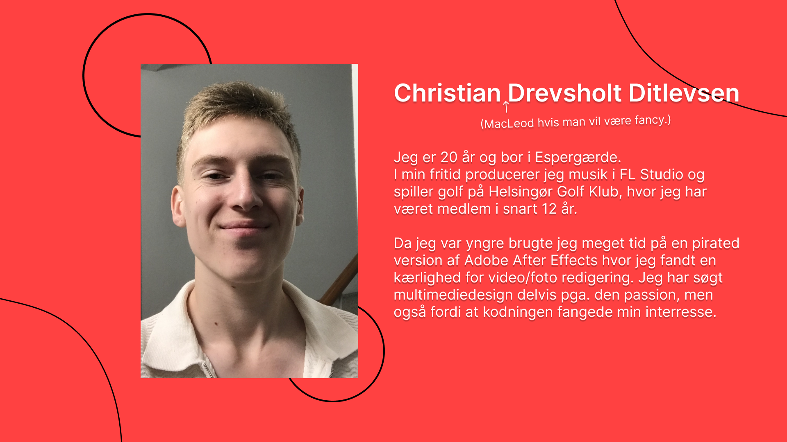
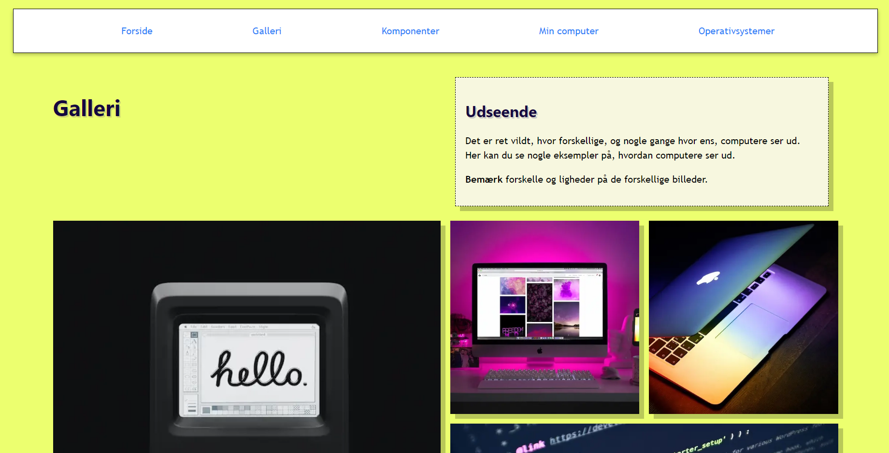
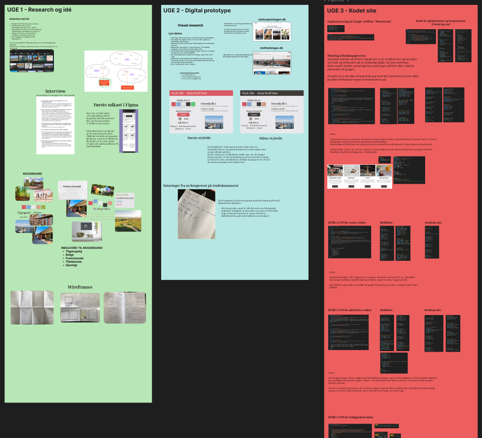
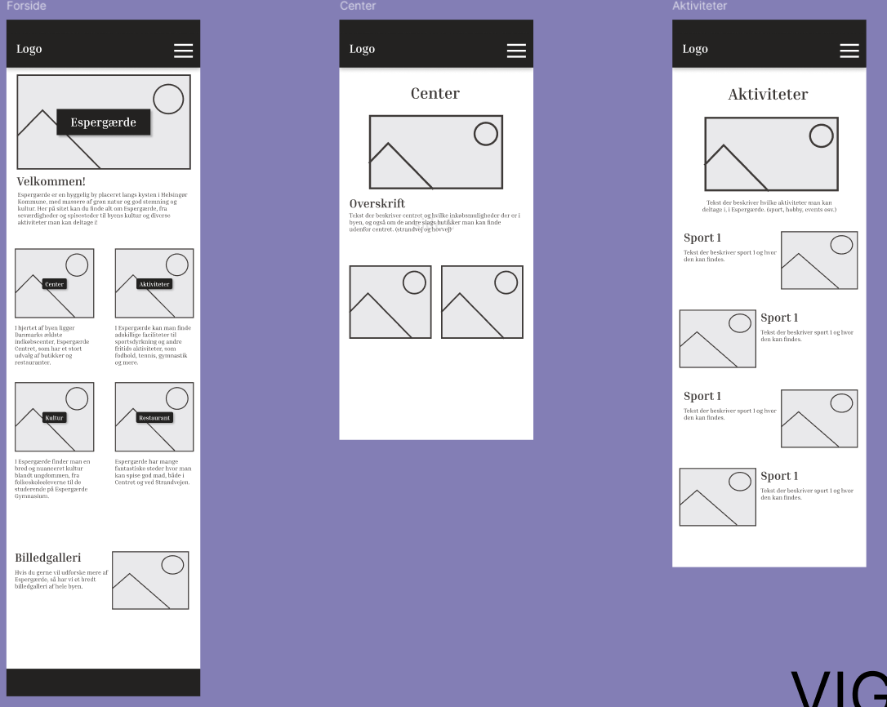
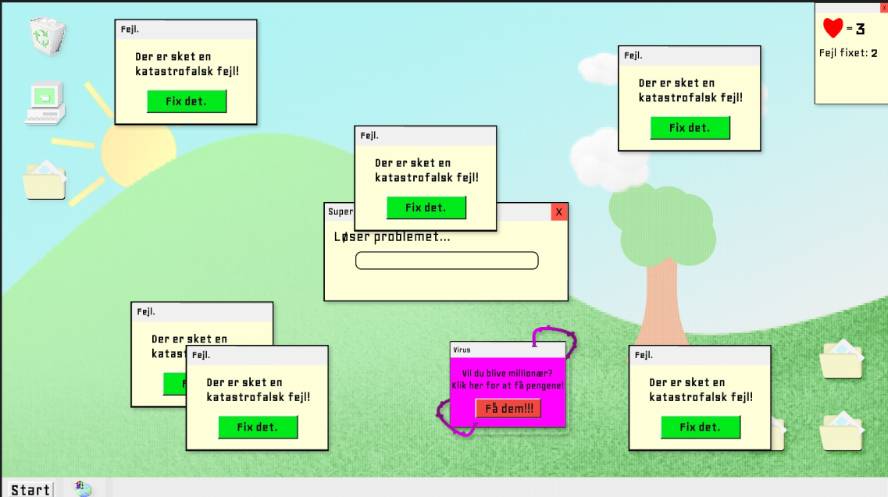
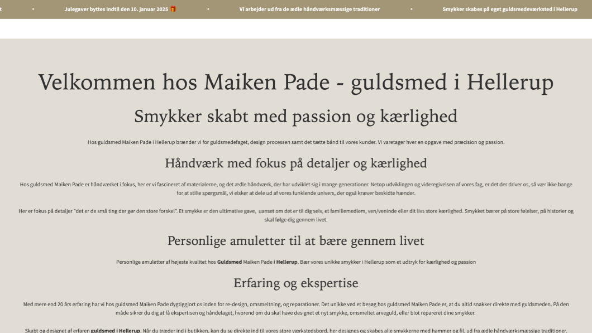
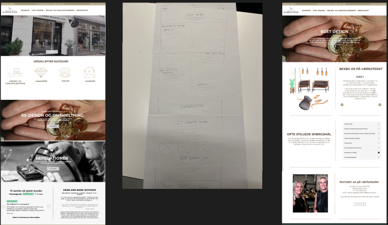

Portfolio
Nedenunder finder du et portfolio af alt jeg har lavet i løbet af mit 1. semester på KEA.
Semestret er delt op i temaer, og du kan klikke på de forskellige temaer nedenunder og læse hvad temaet gik ud på, hvad jeg har lært fra temaet og hvordan jeg løste temaets opgave.
Tema 1
Tema 2
Tema 3
Tema 4
Tema 5
Hvad handlede tema 1 om?
I tema 1 lærte vi grundlæggende HTML kodning, hvilket er en af de mest basale og fundamentale udviklingsmetoder inden for webudvikling. Vi blev introduceret til FileZilla som vi bruger til at uploade filer til vores domæne, mere akademisk sagt så er FileZilla vores digitale udvekslingsformat.
Vi blev introduceret til Figma og lavede et simpelt præsentationskort for at lære hvad programmet kan. Denne erfaring var meget nyttig, da vi i de næste temaer vil arbejde meget i Figma, både til at lave wireframes, layouts, digitale prototyper og mere. Vi blev også guidet igennem processen at opføre et domæne/webhotel gennem en hosting service, og at forbinde vores FileZilla til vores server så vi kan uploade filer til vores domæne. I forbindelse med det lærte vi det mest basale HTML kodning, og lavede vores første “Hello World!”.
Som det sidste i temaet skulle vi i grupper lave en præsentationsvideo for gruppen. Opgaven fungerede både som en måde at lære mine studiekammerater bedre at kende, men også for at introducere de emner Multimediedesign vil komme ind på.
Præsentationskort
Hvad lærte jeg i tema 1?
Jeg lærte det mest basale HTML kodning og hvordan man uploader filer til et domæne, hvilket hjalp mig med at få min første website op at køre. Jeg brugte også Figma til at designe præsentationskortet, hvilket gav mig praktisk erfaring med at anvende designprincipper. Gennem læringen af FileZilla har jeg fået forståelse for hvordan data overføres og håndteres mellem forskellige systemer og platforme. Derudover fik jeg også erfaring med at samarbejde i en gruppe om at producere video materiale, som i forbindelse med studiet f.eks. kunne være at producere en video til at have på en hjemmesides Hero sektion.
Gruppevideo
Hvad handlede tema 2 om?
I tema 2 lærte vi grundlæggende webdesign. Vi lærte grundlæggende HTML og CSS, og skulle i forbindelse med det udvikle et simpelt site om computere, hvor vi fik uddelt noget tekstindhold og billeder som vi så skulle placere på vores site ud fra nogle wireframes som underviserne havde lavet.
Vi blev også introduceret til tankegangen om at kode en hjemmeside “mobile first” og at lave responsivt design. Vi havde også en workshop hvor vi lærte en masse om designprincipper, typografier, stil og mere. I slutningen af temaet skulle vi aflevere vores hjemmeside som del af studiestartsprøven.
Hvad lærte jeg i tema 2?
I løbet af temaet lærte jeg en masse om HTML og CSS. Jeg blev meget hurtigt god til at bruge grids og flexbox i CSS til at placerer de forskellige elementer i min HTML i et pænt layout. Jeg lærte også hvor nyttig <div> tagget er samt classes, netop for at kunne manipulere med specifikke elementer på mit site.
Vi lærte også at bruge @media queries til at gøre vores hjemmeside responsiv, hvilket viste hvorfor “mobile-first” tankegangen er nyttig, da det er meget nemmere at ombryde et mobil design til desktop. Dette skyldes at telefoners skærme er vertikale og derfor er der ikke meget plads til at gøre meget med designet, hvorimod på desktop er der meget mere plads at gøre godt med. Så ved allerede at have etableret stilen og et basalt layout til mobil, så skal man stort set bare ændre layoutet når siden ombryder til desktop.
Jeg lærte også en del om bruger tendenser når det kommer til selve designet af en hjemmeside, og om designprincipper som gestalt principperne. Gestalt principperne er gennemgående principper der påvirker oplevelsen af sammenhæng i et design, f.eks. “tæthed”, hvor hvis elementer er tæt ved hinanden, opfattes de som sammenhængende.
Screenshot af kodet site
Hvordan løste jeg opgaven?
I temaet fik vi opgaven at lave vores første reelle site, hvor vi fik udleveret noget tekstindhold og billeder af underviserne, som vi så skulle sætte op ifølge nogle wireframes som underviserne også udgav. Udover det måtte vi selv finde ud af stylingen af hjemmesiden. Jeg gjorde meget brug af <div> tagget samt classes for at kunne placere og style individuelle elementer på mit site, jeg kunne også have benyttet mig af ID attributten men jeg fandt det ikke nødvændigt. Da opgaven primært gik ud på at vi skulle lære CSS grids, flexbox og media queries, besluttede jeg mig for at gøre min styling simpel så jeg kunne fokusere på at få styr på specielt grids i CSS. Designet af hjemmesiden endte med at blive en gul baggrund med en beige/hvid baggrund til tekstafsnit. En sjov note til den gule baggrund er at jeg uintentionelt lavede et reference til albummet “Computerworld” af Kraftwerk, da jeg havde lavet en hjemmeside om computere med et gult tema, ligesom albumcoveret til Computerworld.
Hvad handlede tema 3 om?
I tema 3 lærte vi meget om process og dokumentation af at udvikle et site. Vi lavede mange øvelser til idéudvikling, som brainstorming og mindmaps. Derudover blev vi også guidet igennem processen at lave wireframes, skitsering, valg af stil og mere, som vi skulle bruge til at løse temaets opgave. Opgaven var at lave et site om et selvvalgt emne, hvor vi så selv skulle lave design, indhold og layout til hjemmesiden. Formålet med opgaven var at vi skulle få erfaring med selv at designe en hjemmeside fra bunden af, dvs. emne for sitet, målgruppe, design, indhold osv.
Udviklingsprocess af site
Hvordan løste jeg opgaven?
Efter at brainstorme forskellige ideer, besluttede jeg mig for at lave et tour guide site om Espergærde, som er byen jeg er opvokset i. Jeg lavede noget hurtig research på Espergærdes online tilstedeværelse og observerede at der ikke var nogen fyldestgørende dækning af byen på internettet.
Jeg brugte forskellige metoder til at løse opgaven. F.eks. startede jeg med desk-research og interviews for at undersøge hvordan andre tour guide sites er indrettet, og hvad en potentiel bruger vil ønske at finde/se i et tour guide site. Jeg lavede moodboards og style tiles som matchede Espergærdes æstetik, og startede med et mere farverigt style tile som jeg ændrede til et monokromt style tile, da jeg ved min desk research fandt frem til at et minimalistisk design lader billeder fange opmærksomheden, hvilket er intentionen med sitet.
Vi skulle bruge Figma til at fremstille en digital prototype af vores site, hvilket viste sig at være meget brugbart da jeg kunne lave brugertests med det, og derved fik god feedback og information om hvad der fungerede godt ved mit design og hvad der kunne forbedres. Jeg brugte den digitale prototype til eksempelvis at lave 5-sekunders tests, hvor jeg kunne se om brugere nemt kunne forstå formålet af mit site bare ved at se på det i 5 sekunder.
Kodningen af sitet var ikke så udfordrende grundet det simple design, men jeg lærte stadig en masse under processen. Jeg fandt hurtigt ud af hvor vigtigt det er at strukturere sin HTML ordentligt så man kan finde specifikke elementer nemt - til dette gjorde jeg f.eks. brug af noter til at indikere hvor forskellige sektioner er. Jeg lærte også hvordan man importerer fonts fra Google Webfonts, samt hvordan man kan embedde et kort fra Google Maps og linke til andre sider. Et element som var specielt udfordrende var burgermenuen, da jeg havde problemer med at få den til at ombryde ordentligt til og fra burgermenuen og en global navigationsbar.
Wireframes for mobilsite
Hvad har jeg lært?
For mit første reelle site jeg helt selv har lavet, er jeg overordnet tilfreds med resultatet - der er en masse forbedringer som jeg med hensigt ville gøre, men jeg fik lært en masse under temaet - specielt ift. ideudviklingen og at strukturere min arbejdsproces. Jeg lærte forskellige metoder til at generere mange ideer hurtigt, f.eks. ved brainstorming og mindmaps. Jeg lærte også at danne struktur i min arbejdsproces, eksempelvis hvordan jeg startede med desk-research og interviews for at indsamle kvantitative og kvalitative data om mit emne, og derefter begyndte at udarbejde en stil og så et layout ud fra stilen og brugertests.
Hvad handlede tema 4 om?
Tema 4 handlede om grundlæggende animation, hvor målet var at lære Javascript animation i CSS. Vi skulle i den sammenhæng bruge Javascript til at kontrollere CSS animationer for forskellige elementer, som f.eks. at bruge en EventListener i Javascript til at lytte om en bruger klikker på et element, for så at få elementet til at afspille en specifik animation. Opgaven i tema 4 var at vi skulle udvikle et spil, hvor man skal klikke på nogle elementer som bevæger sig for at vinde. Vi skulle producere alting selv, dvs. konceptet af spillet, de assets der skulle bruges i spillet, lyd og musik samt koden. I starten af temaet blev vi vist eksempler på forskellige spil som tidligere studerende har lavet, og jeg kom hurtigt på ideen at mit spil skulle handle om computere.
Papirprototype af oprindelige ide

Hvordan jeg løste opgaven
Jeg benyttede mig af nogle af metoderne fra de andre temaer til at udvikle på ideen, såsom brainstorming, men det var først da jeg lavede en papirprototype at jeg indsnævrede præcist hvad mit spil skulle handle om, og hvordan mekanismerne skulle fungere. Mit endelige spil handler om at man skal forhindre en gammel computer i at blive overbelastet med fejl notifikationer, og det gøres ved at spilleren skal lukke en masse pop-up vinduer og samtidigt undvige farlige virusser.
Min proces startede med at brainstorme og at lave moodboards og en papirprototype af min ide, for at konkretisere den. Derefter lavede jeg state- og aktivitetsdiagrammer til at danne overblik over de forskellige funktioner der skulle være i spillet. Jeg brugte forskellige værktøjer til at producere spillets forskellige elementer, herunder assets, lyde og kode.
I forbindelse med dette lærte vi også om konventioner inden for UI-elementer som gør spillet nemmere at forstå, f.eks. tandhjul = indstillinger. Dette kan vi selvfølgelig også tage videre fra spil til vores reelle hjemmesider. Jeg benyttede mig af CSS til at animere spillets elementer, og brugte Javascript til at styre animationerne og elementer vha. ting som EventListeners og funktioner, eksempelvis ved en EvetnListener der aktiverer en funktion som tilføjer en class til et element som så får elementet til at afspille en animation vha. CSS.
Screenshot af spillet
Hvad har jeg lært?
Under processen lærte jeg meget om at strukturere min arbejdsproces og at planlægge den ordentlig, så jeg fik udviklet de rigtige ting i den rigtige rækkefølge. Jeg blev også meget bekendt med specielt Javascript, og lærte endda mange funktioner af Javascript, selvom de ikke nødvendigvis blev brugt i spillet. Et eksempel er nøgleordet this, som kunne bruges til at optimere min kode, da man i stedet for at skrive en masse funktioner til alle elementerne - når de skulle udføre samme animation - kunne jeg bruge this til at kalde på én funktion for flere elementer. I mit tilfælde var det for besværligt at gøre, da jeg havde et specifikt punkt i mit element som jeg vil have at spilleren skulle klikke på, så jeg måtte lave en masse funktioner.
Nedenunder er et link til spillet, hvor du også kan se mere af udviklingsprocessen
Hvad handlede tema 5 om?
Tema 5 var det sidste tema for 1. semester og dermed også den største opgave. Vi skulle nu gøre brug af alt det vi har lært i de forrige temaer for at fuldføre temaets opgaver. I grupper skulle vi arbejde sammen med en virksomhed om at lave et redesign af virksomhedens hjemmeside. I opgaven lærte vi at arbejde i grupper, lave fælles kodning gennem github, samarbejde med en virksomhed i en semi-professionel indstilling og at føre dialog med en kunde.
Men inden virksomhedsopgaven skulle vi først lave en mindre opgave, hvor vi skulle producere en 60 sekunders video hvor vi interviewede en person der fortalte om deres passion.
Passionsvideoen
Jeg filmede en ven der har en passion for forfatterskab, og jeg startede min proces ved at udarbejde nogle interviewspørgsmål som jeg vil stille ham. Så lavede jeg et storyboard der fulgte 5-shot-sequence metoden da det var et krav for opgaven, og jeg drøftede nogle b-roll shots også. Da jeg havde filmet alt det videomateriale jeg skulle bruge, redigerede jeg videoen med DaVinci Resolve, og det endelige resultat kan ses her:
Virksomhedsopgaven
Det første min gruppe gjorde var at undersøge virksomheder vi kunne komme i kontakt med. Jeg er tilfældigvis gode venner med guldsmeden Maiken Pade, og hun var interesseret i, at vi lavede et redesign til hendes hjemmeside. Vi vedholdte kommunikation med virksomheden for at få mere indsigt i virksomheden til at udvikle vores redesign.
Vi holdte SCRUM møder dagligt i gruppen og med de andre grupper på studiet for at strukturere vores arbejdsproces ud fra hvilke opgaver der skulle laves i hvilken rækkefølge. Vi oprettede også et Trelloboard til at planlægge hvad der skulle laves i løbet af ugerne, og for at vi nemt kunne dele opgaverne op blandt hinanden og se om der allerede var nogen i gang med en opgave.
Vi startede med at lave desk-research på virksomhedens hjemmeside for at få en forståelse på hjemmesidens formål (målgruppe, budskab, stil, og lign). Vi undersøgte derefter andre guldsmed/smykkevirksomheders hjemmesider for at undersøge konkurrenternes designvalg, med hensigt at lade os inspirere af deres metoder til at forbedre vores redesign. Vi brainstormede i gruppen om hvilke hovedpunkter vi vil sætte for vores redesign, og vi definerede følgende mål for vores redesign:
- Forbedring af brugervenlighed, såsom mere overskuelig forside som ikke er så lang.
- Gøre den globale navigation pænere og mere simpel.
- Opfriske den visuelle identitet, så sitet ser mere eksklusivt og luksuriøst ud, samt at gøre sitet mindre kedelig i udseende.
- Billeder skal gøres mindre og tekst skal fremhæves på en mindre “kludret” måde, da det ser meget uoverskueligt ud.
Udklip af virksomhedens hjemmeside
Der er for meget tekst som strækker sig for langt hen af skærmen, hvilket forværrer brugeroplevelsen da det er besværligt at læse og ikke ser så pænt ud.
Udvikling af designet
Vi førte brugertests på virksomhedens nuværende site for at undersøge hvilke elementer af hjemmesiden der kunne forbedres, og resultatet af brugertestsne hjalp os også til at definere hvad vi vil opnå med vores redesign, som nævnt ovenstående. Vi brugte også user stories til at sætte os selv i perspektivet af en bruger der besøger virksomhedens hjemmeside, med formålet at få bedre forståelse for hvordan vi skulle lave vores redesign.
Da vi havde indsamlet nok data om hjemmesiden og målgruppen, begyndte vi at udvikle vores redesign. I starten lavede jeg style tiles for at etablere hvilken stil vi vil arbejde med, og jeg udarbejdede nogle forskellige style tiles der holder sig nogenlunde trofast ved hjemmesidens oprindelige stil, så brugere stadig kan genkende hjemmesiden men også pga. den etableret stil der passede fint. Mine gruppemedlemmer udviklede samtidigt wireframes til vores redesign, og gennemgik forskellige iterationer før vi landede på et endeligt layout til redesignet.
Vi lavede vores digitale prototype, som vi så kunne lave brugertests på, for at undersøge om vores redesign opnåede vores ønskede resultater. Vi udførte 5-sekunders tests og tænke-højt tests på vores prototype, og ud fra resultaterne justerede vi vores design til at dække de svagheder, vi fandt ud fra vores brugertests.
Digital prototype i Figma
Kodning med GitHub
Vi brugte GitHub til at kunne samarbejde med at kode hjemmesiden, da vi delte arbejdet op til 1 underside per gruppemedlem. Jeg stod personligt for at kode undersiden “Eget design og Unikadesign”.
Det var lidt besværligt i begyndelsen at få GitHub til at virke, men da vi gjorde, fandt vi hurtigt ud af hvor stor en hjælp værktøjet er til gruppearbejde med kode, da vi nemt kunne dele kode med hinanden og hjælpe hinanden med at finde fejl i vores kode.
Du kan klikke på nedenstående link for at se vores endelige foreslag til et redesign. "Eget Design" siden er den jeg var ansvarlig for.
Hvad lærte jeg?
En vigtig ting jeg personligt lærte under kodningsprocessen, er hvor vigtigt det er at blive enige om hvordan man skal kode og strukturere sin HTML og CSS, da det gør det betydeligt nemmere at forstå og finde rundt i hinandens kode når man skal dele andres kode eller hjælpe andre med at løse et problem i deres kode.
Jeg fik også god erfaring med at arbejde sammen med andre om at udvikle et design, at fordele arbejdet i gruppen og meget mere. Specielt fik jeg også erfaring med at kommunikere med en virksomhed/kunde, og fik forståelse for hvor vigtig kommunikationen er for at sikre at man producerer et resultat kunden er tilfreds med.